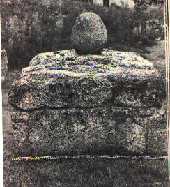
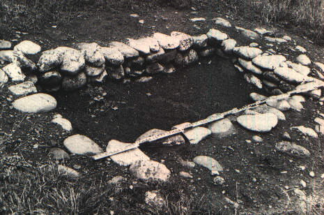

Situata sui colli bolognesi, è fondata dagli Etruschi intorno al VI secolo a.C. a scopo di formare un corridoio tra Spina e la parte orientale dell'Etruria con l'obbiettivo di incrementare i commerci sull'Adriatico.

Tomba a cassa di lastre di travertino del sepolcreto orientale.

Tomba a fossa con pareti rivestite di ciottoli del sepolcreto orientale.